CASE STUDY / FMCG PACKAGING
Machandel
Case Study.
Packaging System Redesign
While working at Windmill Organics, I led a packaging refresh for Netherlands-based supplier partner Machandel. The project involved developing a new front-of-pack label system that felt fresher, clearer and more engaging, while staying functional for a multi-range product portfolio. I created demo labels for presentations and exhibitions, refined the system through stakeholder feedback, and delivered final artwork files for production handover.
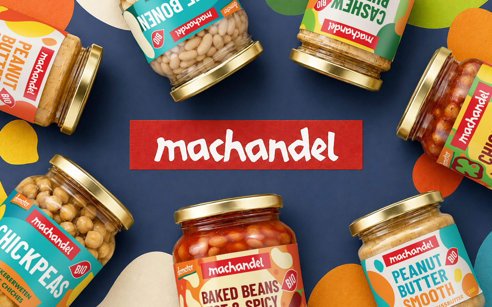
01 / PROJECT OVERVIEW
The brief.
Machandel wanted to refresh its supplier labels with a brighter, more youthful look while staying true to its organic values. I developed a simple, flexible system with clear range differentiation, creating demo front-of-pack labels that could later be adapted with final product information.
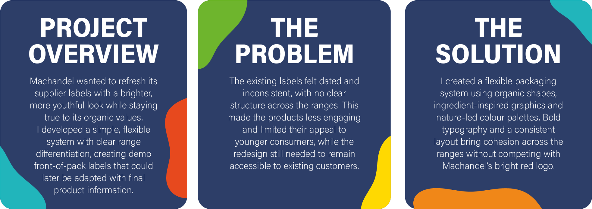
02 / BEFORE THE REFRESH
Previous.
The previous packaging looked quite different across the ranges, with inconsistent layouts, typography and visual styles. This made the overall brand feel a bit disconnected and dated, with no clear design system tying everything together.
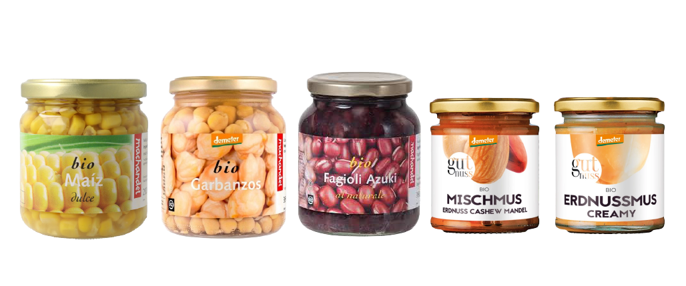
03 / THE FINAL DIRECTION
Current.
The final direction uses bold product names, clear category colours and a consistent label structure, making each range easy to recognise. The system can adapt across different jar sizes and product categories, while leaving room for new products in the future.
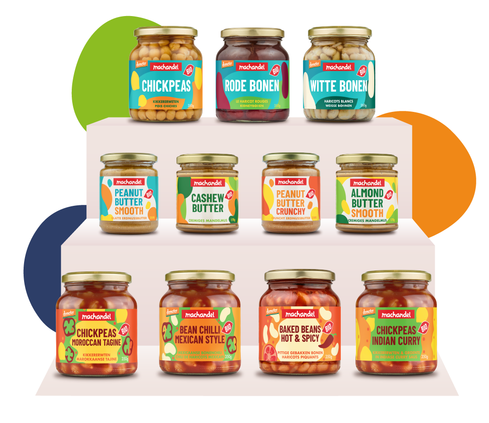
04 / VISUAL RESEARCH
Mood board.
I explored a bold, playful visual direction inspired by vegetables, fresh ingredients and organic shapes. Bright, contrasting colours and expressive graphics helped establish a more energetic visual identity, while creating a flexible foundation for Machandel's different product ranges.
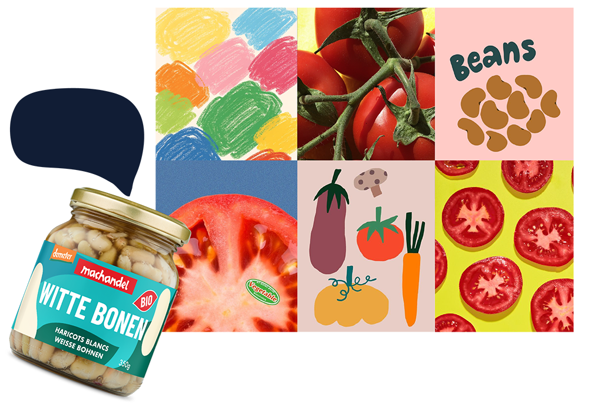
Exploring a bold, playful veg inspired world with bright colours and fresh ingredient cues!
05 / COLOUR PALETTES
Colour
system.
The colour system separates three product families with palettes drawn from food and natural ingredients: World Meals, Spreads, and Beans & Pulses. Each range has its own character while staying part of the same visual family.
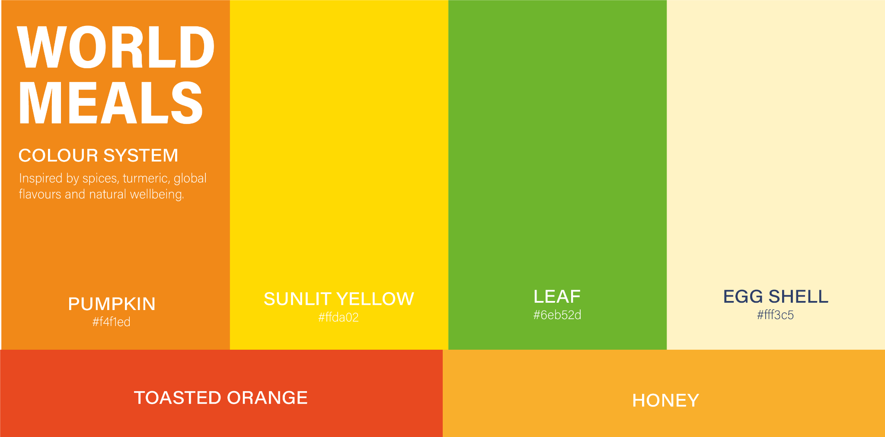
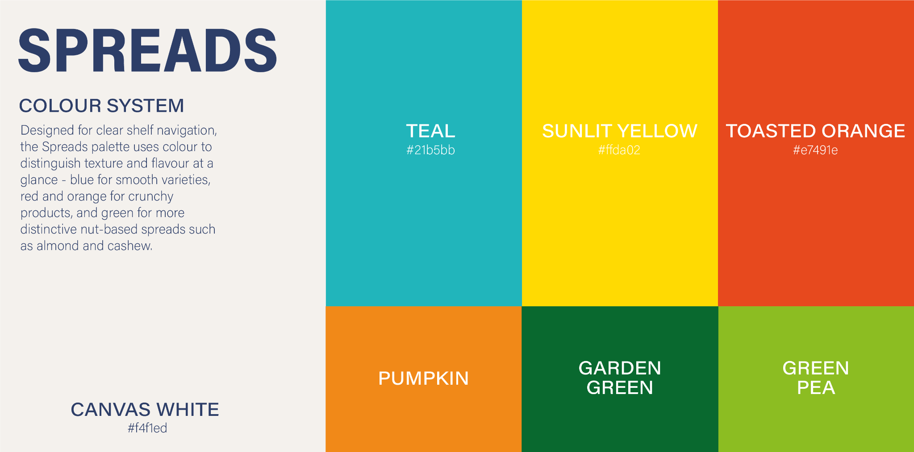
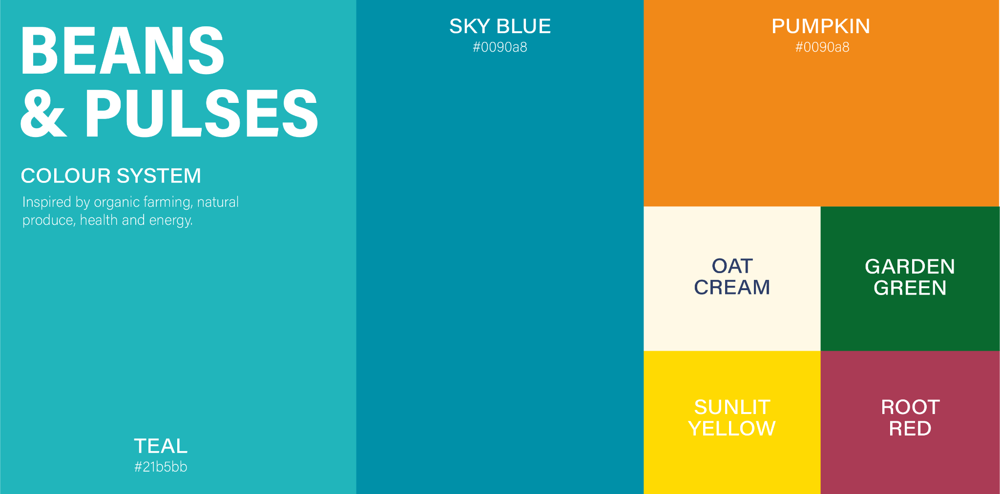
06 / PACKAGING SYSTEM
Packaging
anatomy.
The label structure was designed to stay clear and digestible at first glance, balancing the business-facing functionality with a bolder and more recognisable visual system.
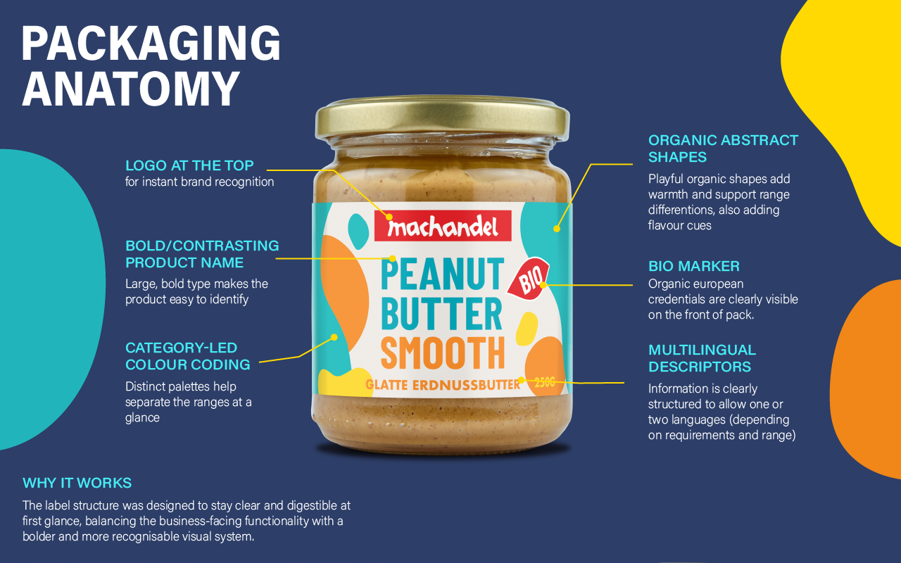
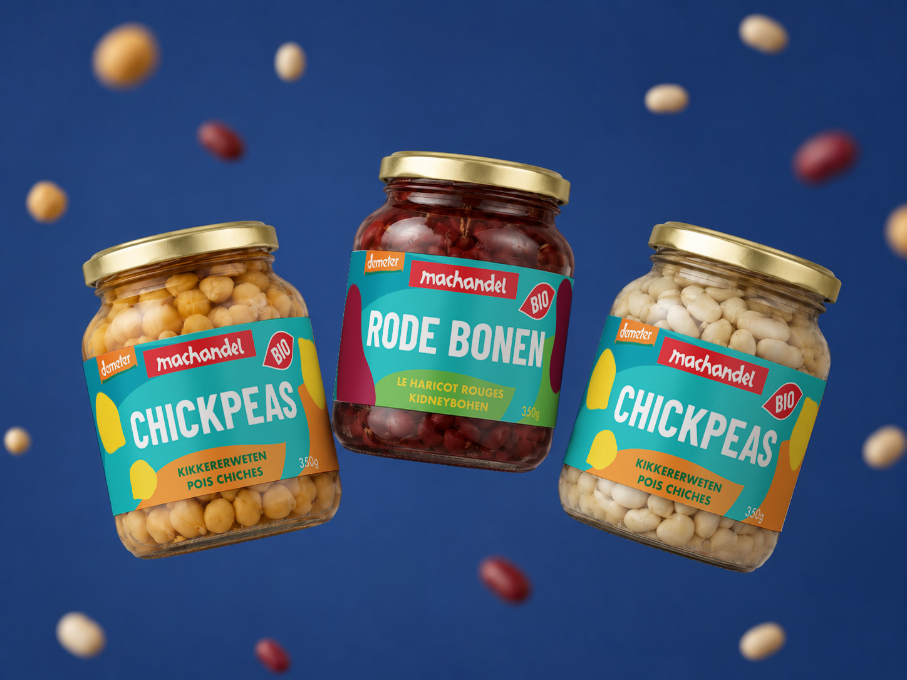
07 / FINAL PRODUCT VISUALS
The packs
in context.
Bold typography and consistent label structures bring cohesion across the ranges, without competing with Machandel's bright red logo. The finished system was designed to adapt to product categories, jar sizes and future line extensions.
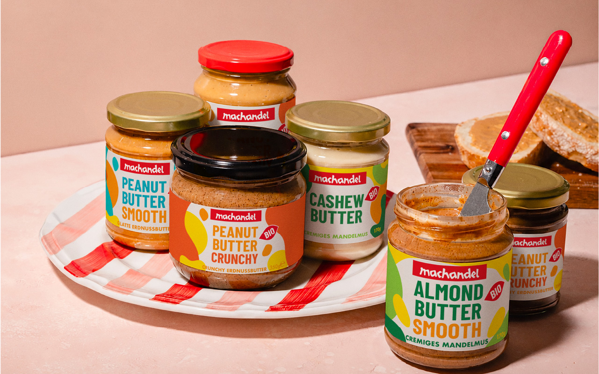
World
application.
The final direction uses strong product typography, clear category colour coding and a consistent label structure to make each range easy to navigate. The result is a flexible packaging system that can adapt across different jar sizes, product categories and future range extensions.
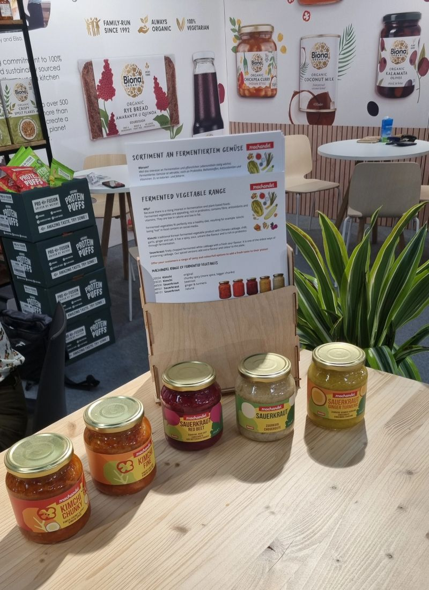
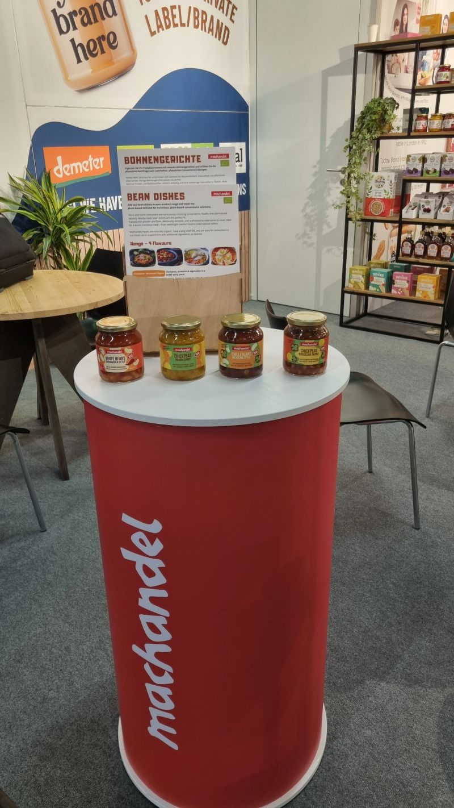
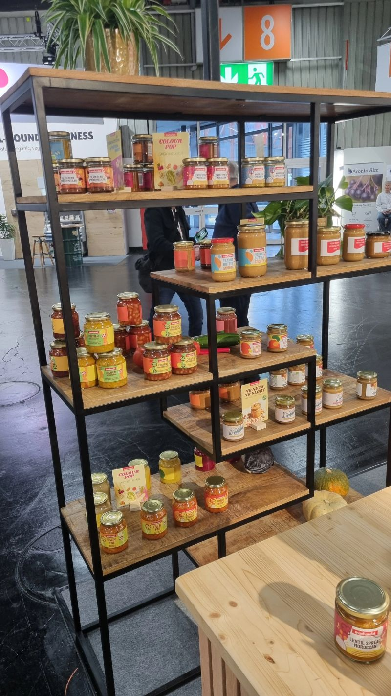